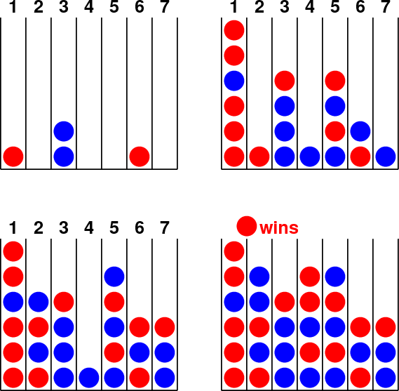

Connect Four in Prolog
Prolog implementation of a connection game known
as Connect Four and also Four in a Row.
The program uses the minimax algorithm
with α-β pruning for its AI player.
Source code: conn4.pl
Try it for example with Scryer Prolog:
$ scryer-prolog conn4.pl
?- play.
Example outputs:
conn4_1.txt,
conn4_2.txt
Ties between equally good moves are broken randomly, thus games
typically differ from run to run.
If you have a PostScript viewer (like "gs") installed, you can
also use a graphical and interactive version, with:
$ scryer-prolog -g show conn4.pl | gs -dNOPROMPT -g600x600 -r120 -q
At any turn, you can either press SPACE to let the computer choose
a move, or press one of the numbers 1, 2, ..., 7 to drop a piece
in that column.
Sample states of a game:

More about Prolog: The Power of Prolog
Main page